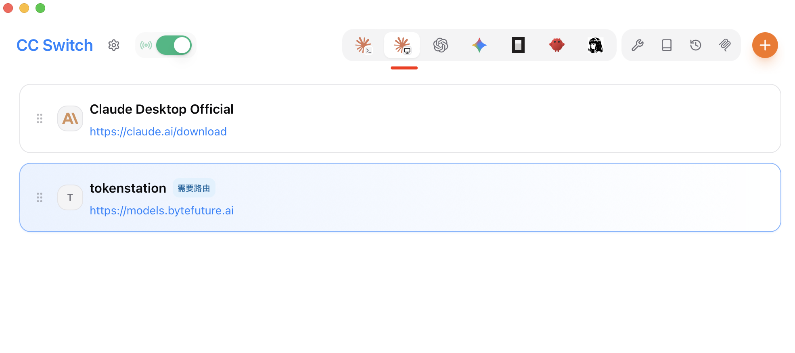
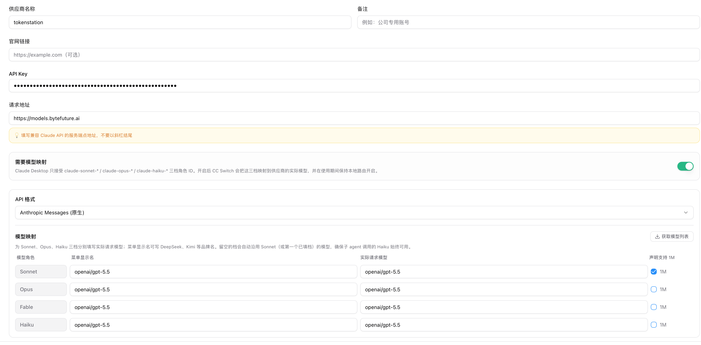
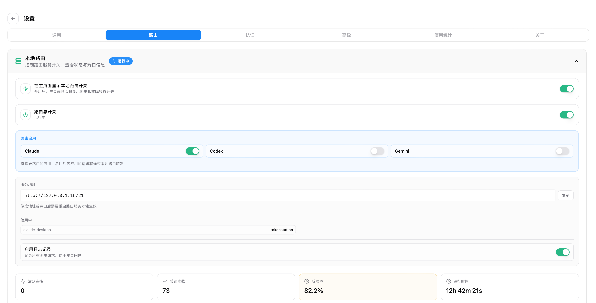
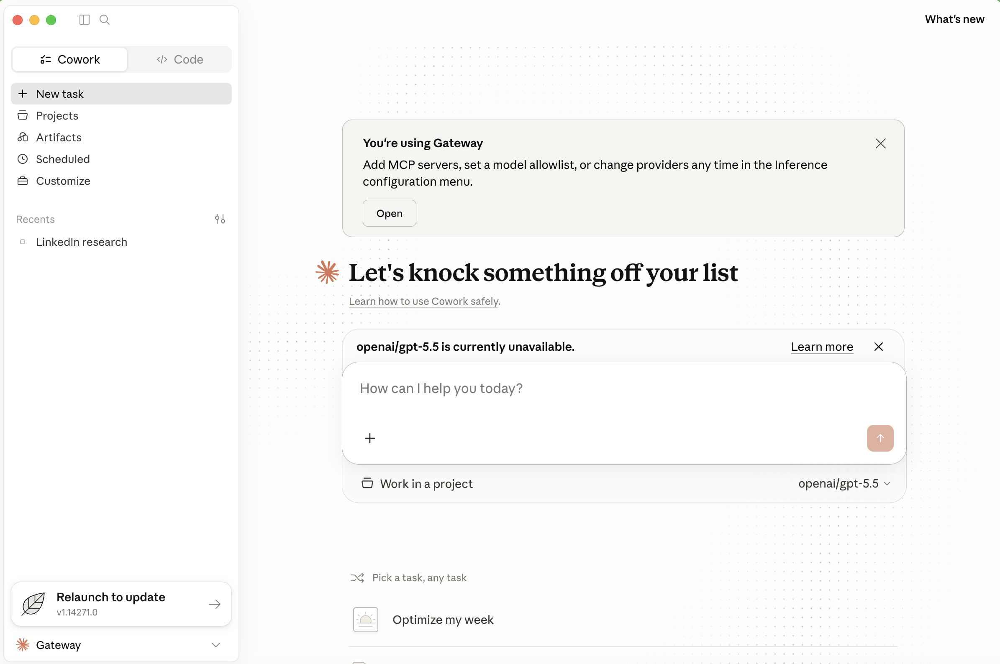

CC Switch 是一个桌面工具，用来管理 Claude Code、Claude Desktop、Codex、Gemini CLI 等工具的 Provider。平时你要换 API 服务商，往往要去不同工具里改不同格式的配置；CC Switch 把这些入口放到同一个界面里，切到对应工具，再启用对应 Provider。
这篇文章用 Token Station 做例子。Token Station 提供上游模型入口；CC Switch 负责把这个入口写进具体客户端。这里重点是 Claude Desktop，因为它和 Claude Code 是两个独立入口：Claude Desktop 走 3P profile、model mapping 和本地路由；Claude Code 更适合走 settings.json 或环境变量。
先准备 CC Switch 和 Token Station key
先安装 CC Switch。macOS 用户可以用 Homebrew：
brew install --cask cc-switchWindows、Linux 或手动安装，可以去 CC Switch Releases 下载对应安装包。Token Station 这边只需要准备一枚可用的 API key，后面会填到 CC Switch 的 Provider 里。
下面先把 Claude Desktop 这条线跑通。Claude Code 的做法已经单独写在 《在 Claude Code 中通过 Token Station 使用任意模型》 里。
配置 Claude Desktop
打开 CC Switch，在顶部工具栏切到 Claude Desktop 图标对应的面板。面板里会看到 Claude Desktop Official 这类已有 Provider。

接下来点右上角的 + 新增 Provider。这里添加的是 Token Station，不是 Claude Desktop 官方登录账号。字段可以按下面填写：
| 字段 | 建议填写 |
|---|---|
| 名称 | Token Station |
| API Key | 你的 Token Station key |
| 请求地址 | https://models.bytefuture.ai |
| API 格式 | Anthropic Messages（原生） |
| Needs model mapping | 开启 |

https://models.bytefuture.ai，并开启“需要模型映射”。这里有两个细节容易填错。请求地址用 https://models.bytefuture.ai，末尾不要加斜杠；Needs model mapping 要打开，因为 Claude Desktop 不会直接接受 openai/gpt-5.5 这样的模型名。
给 Claude Desktop 配 model mapping
Claude Desktop 的模型菜单认的是 Sonnet、Opus、Haiku 这几类 role。这里不用让 Claude Desktop 直接认识 GPT 模型，而是让 CC Switch 在中间做一次映射：Claude Desktop 选择 Sonnet，CC Switch 实际请求 Token Station 上的某个模型。
在 Token Station Provider 里打开 Needs model mapping 后，可以先按这个组合填：
| Claude Desktop role | 菜单显示名 | Requested model | 说明 |
|---|---|---|---|
| Sonnet | GPT-5.4 Mini | openai/gpt-5.4-mini | 日常对话、写代码、读文档。 |
| Opus | GPT-5.5 | openai/gpt-5.5 | 复杂推理、长上下文、架构设计。 |
| Haiku | GPT-5.4 Nano | openai/gpt-5.4-nano | 短任务、低延迟、低成本。 |
想先确认能不能跑通的话，只填 Sonnet 也可以。空白 role 会继承第一个已填写的模型（优先 Sonnet），所以不用一开始就把所有角色配得很完整。等 Claude Desktop 能正常发消息后，再补 Opus 和 Haiku。
打开 Claude Desktop 本地路由
Model mapping 需要 CC Switch 在本机接住 Claude Desktop 的请求，再转发给 Token Station。先回到 CC Switch 首页，点击设置，进入 路由 页面。

这个页面里有三处要确认：在主页显示本地路由开关 要打开，路由总开关 要保持运行，路由启用 里要打开 Claude。然后回到 Claude Desktop 面板，把顶部的 local routing toggle 切到 On。之后只要走 Token Station + Model Mapping，CC Switch 就需要一直开着。
启用 Provider，然后重启 Claude Desktop
回到 Token Station Provider 卡片，点击 Enable。这一步会让 CC Switch 把当前 Provider 写入 Claude Desktop 的 3P profile。
接下来要完全退出 Claude Desktop，再重新打开。这里和很多命令行工具不一样：Claude Desktop 通常只在启动时读取 3P profile，所以切换 Provider 后不重启，经常看不到变化。重启后，模型菜单里应该能看到刚才 model mapping 里填写的显示名，比如 GPT-5.4 Mini、GPT-5.5、GPT-5.4 Nano。
选一个模型，发一条简单消息：
请只回复：pong
如果返回 pong，说明这条链路已经通了：Claude Desktop 先连到 CC Switch 的本地网关，再由 CC Switch 带着 Token Station key 去请求真实模型。
配置 Claude Code
Claude Code 不走 Claude Desktop 的 3P profile，也不需要 Claude Desktop 这套 model mapping 和本地路由。它更像命令行工具，直接配置 ~/.claude/settings.json 或当前 shell 的环境变量会更清楚。
如果你的目标是让 Claude Code 使用 Token Station，建议直接看 在 Claude Code 中通过 Token Station 使用任意模型。那篇文章会完整讲持久配置、临时 export、Opus / Sonnet / Haiku / subagent 模型选择，以及怎么用 pong 命令验证。
常见问题
- Claude Desktop 里没有变化。先看 Token Station Provider 有没有 Enable，再完全退出并重新打开 Claude Desktop。
- 模型菜单里看不到 GPT 模型。检查 Needs model mapping 是否开启，以及 Sonnet / Opus / Haiku 至少有没有填一个 Requested model。
- 发消息失败。先确认 CC Switch 还在运行、本地路由是 On，再检查 Token Station API key 和
https://models.bytefuture.ai有没有填错。 - Direct mode 不工作。Direct mode 要求模型名能被 Claude Desktop 识别。Token Station 这里更稳的方式是开启 Model Mapping Mode。
- Claude Code 还是没走 Token Station。不要套用 Claude Desktop 的 3P profile。按 Claude Code 专文 配
~/.claude/settings.json或 shell 环境变量。 - 想切回 Claude Desktop 官方登录。在 CC Switch 里选择 Claude Desktop Official，点 Enable，然后重启 Claude Desktop。
总结
这套配置里最重要的点，是把 Claude Desktop 和 Claude Code 分开看。它们都可以用 Token Station，但入口和配置文件不是一套。
Claude Desktop 走 CC Switch Provider、Model Mapping、本地路由和重启；Claude Code 则更推荐用 Claude Code 专文里的 settings.json / export 方式。配置完成后，你就可以在 Claude Desktop 里使用 Token Station 上的 openai/gpt-5.5、openai/gpt-5.4-mini、openai/gpt-5.4-nano，或者账号里可用的其他模型。